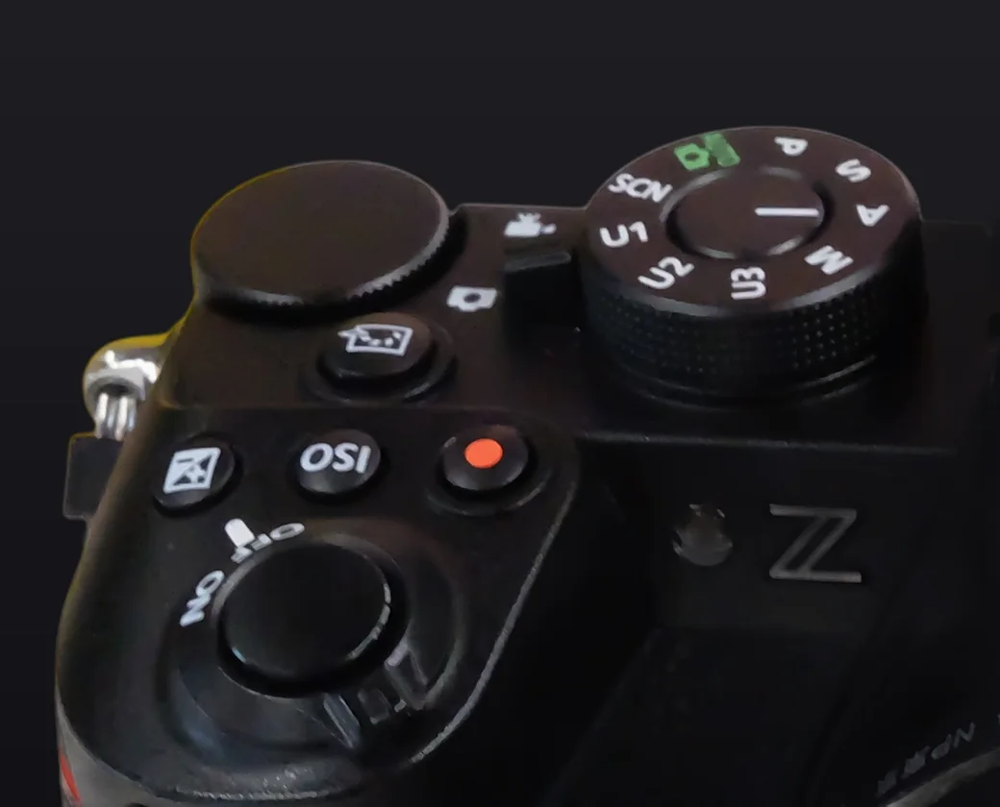

Dans l'appareil
Essaie. Tu verras tout de suite.

Vue éclatée : illustration générée par IA à partir d'une vraie photo du Z50II. Commandes vérifiées dans le Guide de référence Nikon. Site indépendant, non affilié à Nikon.

Vue éclatée : illustration générée par IA à partir d'une vraie photo du Z50II. Commandes vérifiées dans le Guide de référence Nikon. Site indépendant, non affilié à Nikon.